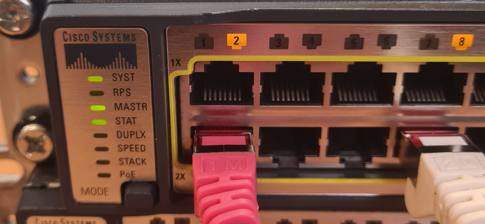

Switch Farceur

Votre admin est quelqu'un de plutôt joueur et perd un peu la mémoire, il a programmé son switch en y cachant un mot de passe important. Arriverez-vous à le retrouver ?
Explication
Il vous a laissé un câble branché d'un seul côté… A quoi peut-il bien servir ?
Cela dit, il faut toujours « réfléchir avant d'agir » Alors réfléchissons… et parlons du binaire.
Le binaire est un système de numération très utilisé en informatique. Il se compose de 0 et de 1
Sur la photo, vous pouvez voir 8 bits. En binaire 8 bits = 1 Octet. L'octet sur la photo est codé de la façon suivante : 01000001.
Arriverez-vous à retrouver ce message caché ?